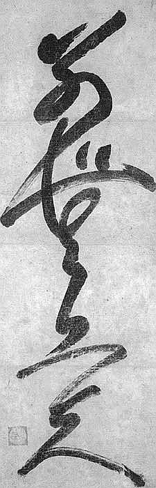

International
InternationalPisanie odręczne - zmierzch zabytku, czy cywilizacji? Proroctwo rodem z SF.
2011-06-11 | autor: flamenco108Wrzucę taką krótką refleksję, zainspirowany filmem, który własnie obejrzałem, a na nim przykładową lekcję stenografii w szkółce przy rosyjskim MSZ.
Otóż w zagajeniu Pani Nauczycielka wypowiada się na temat, który chodzi mi po głowie właściwie od samego początku, jak się zainteresowałem stenografią: komu to do cholery potrzebne, skoro pismo odręczne znajduje się w głębokim odwrocie i być może moje wnuki już w ogóle nie będą go znać? Tym bardziej stenografia w wersji pisanej, która jest bodaj szczytowym osiągnięciem sztuki pisania, przecież dziś już prawie wymarła w większości krajów alfabetu łacińskiego.

Kto trochę po świecie pojeździł, ten wie, że różne są alfabety, a zatem i na różne sposoby wykorzystywane. Np. pisma pochodzące z Indii, choć przecież znakomicie dostosowane do swoich języków, przecież strasznie niewygodne w użyciu. Praktyczni Tybetańczycy, kiedy zaadaptowali Devanagari do swojego języka, wkrótce stworzyli coś około trzech niezależnych metod pozwalających w miarę szybko pisać odręcznie. Jedna z nich nazywa się ma-le, czyli “bez główki”, jak można by nazwać poziomą kreskę bazową występującą w górnej części prawie każdej litery ich alfabetu. Zatem w niektórych krajach pismo odręczne ma się dobrze. Wystarczy przytoczyć przykład krajów, które przyjęły “alfabet” chiński - Chiny, Japonię i okolice. Sprawne pisanie krzakami na komputerze oznacza konieczność opanowania zupełnie nowej umiejętności, nie mającej praktycznie związku z kaligrafowaniem ich na papierze. W szkołach tamtejszych nadal obowiązkowym przedmiotem jest kaligrafia.
Fachowcy na całym świecie są zgodni, że umiejętność pisania odręcznego wpływa bardzo korzystnie na inteligencję. Wykonywano pomiary oraz inne badania, o których pisałem na stronie głównej oraz gdzie indziej, z których wynika, że podczas pisania odręcznego angażuje się o wiele więcej partii mózgu, niż podczas klepania w klawiaturę - pisanie odręczne wymaga zarówno dobrego procesorka od abstrakcji (praca na różnych symbolach, zaszyfrowanie treści przy pomocy tych symboli), jak i od konkretu (podobnie jak w klawiaturze, grafika, orientacja przestrzenna, kontrola ręka-oko). Jednocześnie uczniowie, którzy nie utracili jeszcze zdolności pisania pismem kursywnym (czyli pisanymi), lepiej wypadają w sytuacjach, kiedy trzeba się “wysłowić”, czy to w mowie, czy piśmie. Ich zapas słownictwa jest większy, znajomość ortografii i gramatyki lepsza, bieglej posługują się słowem, niż ich rówieśnicy, którzy już tylko klepią w klawisze, a na kartce stawiają kulfony zwane “drukowanymi”.
Jak będzie wyglądać nasza cywilizacja, kiedy umrze tak stara i pożyteczna umiejętność, a zatem kiedy osłabią się też związane z tym funkcje umysłu? Dziś widzę podział dość groteskowy, bo ludzie starszej daty utrzymują i przepisują swoje notesy, a klepią z mozołem w klawiatury w tempie średnio rozgrzanego ślimaka, z konieczności oczywiście lakonizując swoje wypowiedzi na ekranie. Z drugiej strony młodzież zaczyna odczuwać awersję do pisaków i kartek, które nigdy w przeszłości nie były tak tanie, tak dobre i w takim wyborze, za to świetnie się czuje podczas klepania w klawisze. Młodsi zatem mają coraz więcej problemów z pisaniem odręcznym, co być może jest składnikiem współczesnej sytuacji, kiedy rodzice wywalczają im różniste zaświadczenia o “dysgrafii”, “dysleksji”, “dysortografii”, czy wręcz “dyskalkulii”. Na razie jeszcze nie widać ścisłego związku między umiłowaniem klawiatury a utratą podstawowych zdolności komunikacyjnych, nie wiadomo, czy kiedykolwiek, ktokolwiek zrobi takie badania i uzyska wiarygodne wyniki. Jednakowoż, skoro powoli wkraczam w wiek zgredowski, pozwolę sobie na taki wniosek:

Zmierzch pisma odręcznego oznaczać będzie również głębokie przemiany społeczne w zakresie inteligencji, czyli sumy wiedzy i umiejętności jej wykorzystania. Obawiam się, że raczej wrócimy do przeszłości, kiedy pewien procent społeczeństwa po prostu nie umiał pisać, czytać, lub obu tych rzeczy, takoż więc nie uczestniczył w budowaniu trwałych elementów kultury - bo ich życie i zawód nie będą tego od nich wymagać. Na pierwszy ogień pójdzie umiejętność pisania. Czytanie wciąż wydaje się bardzo potrzebne, w końcu formularze w urzędach zapisane są jakimś alfabetem. Ale komputeryzacja może to zmienić, choć zapewne nieprędko. Już dziś wielu ludzi co najwyżej potrafi się w miarę sprawnie podpisać. Emaile wycięły praktycznie korespondencję pisaną, więc ludzie, którzy kiedyś w bólach wysłali pocztówkę na święta, dziś najwyżej wklepują SMSa i robią “wyślij do wszystkich”.
Zatem prorokuję, że społeczeństwo znowu powróci do stanu podobnego do płaskiej piramidy, gdzie na górze znajdzie się niewielka garstka “gramotnych”, a na dole ogromna masa “niegramotnych”. A stąd zapewne również w stronę średniowiecznego sposobu myślenia skręci świadomość ludzi. I nie mam tu na myśli “mroków”, a raczej większe zaufanie do wyjaśnień prostych, opartych na wierze, lub zaufaniu do autorytetów, unikanie budowania własnego osądu. Niegramotni podzielą się na ambitnych, z których wyrośnie warstwa służebna, gotowa dla awansu dzieci pracować i służyć gramotnym, ufających swoim szefom i podziwiająca ich, pozostali staną się mierzwą, utrzymywaną z państwowej jałmużny, mięsem armatnim i rekrutami w gangach oraz politycznych machlojkach. Na górze za to zapanuje oligarchia potężnych, bogatych, wykształconych, trzymających w rękach nie tylko środki, jak wskazywał ongi Marks, ale też wiedzę, jak te środki produkować i pożytkować. To oni będą toczyć między sobą walki z wykorzystaniem dołów, którym będzie można wmówić wszystko, bo różnica poziomów będzie niemalże jak między bogiem a wyznawcą.
A to wszystko z powodu wyjścia z mody długopisu? Temat na opowiadanie SF?
Pożyjemy, zobaczymy.
2011-06-11 autor: flamenco108